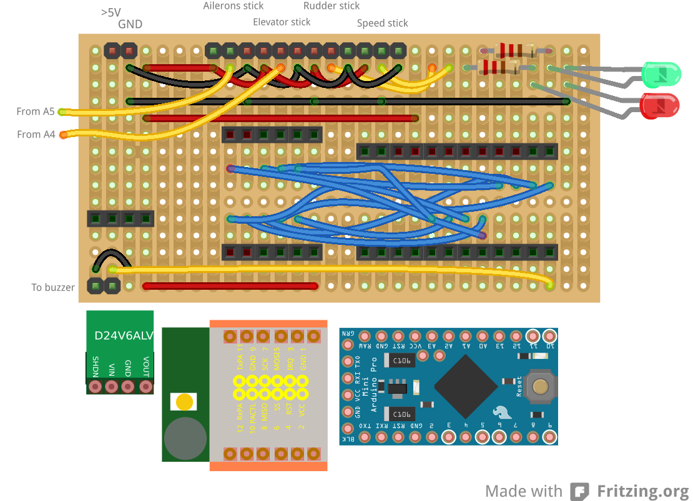

Radio Controlled Aircraft
Here we look at the conversion of the designs and breadboard prototypes into something that could be used in anger.
My plan is to use strip board and so I laid out the ground station board in Fritzing. I had expected to be able to use strip board as an option in the PCB view within Fritzing, but my initial investigation found that strip board is an alternative to a breadboard. So I now have a separate version. This is probably better, since I needed to add connections for the other sticks and for a buzzer that will be used to provide feedback on the status of the plane (signal strength and battery condition). The blue wires are all the connections between the Arduino Pro Mini and the AWA24S RF module. I decided to fit these two modules into headers, providing room to run the wires under the modules. I'm thinking of using shielded cable (thin coax) for these connections between the Pro Mini and AWA24S, grounding the shields. I don't know if interference will be a problem, but I will see how practical it is. At the moment I have also decided to plug the voltage regulator into a header, however, I may choose to solder this directly to the board so as to avoid vibration causing it to work loose.